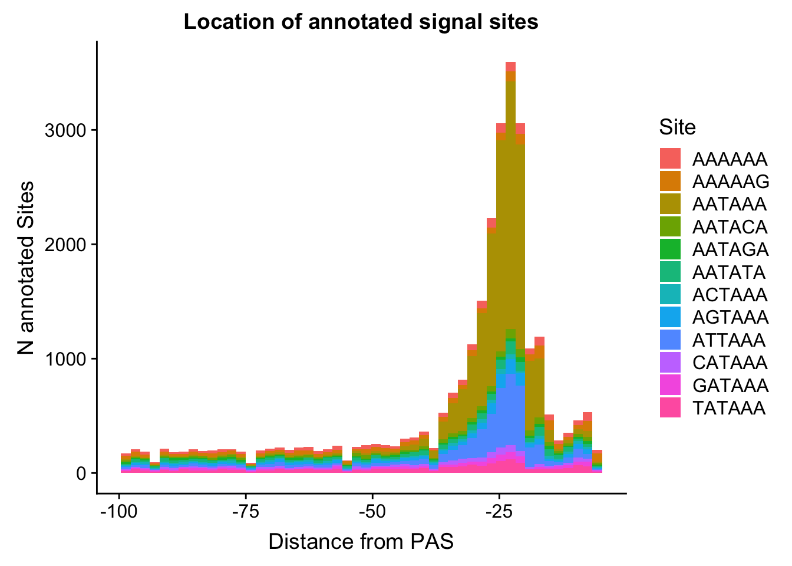
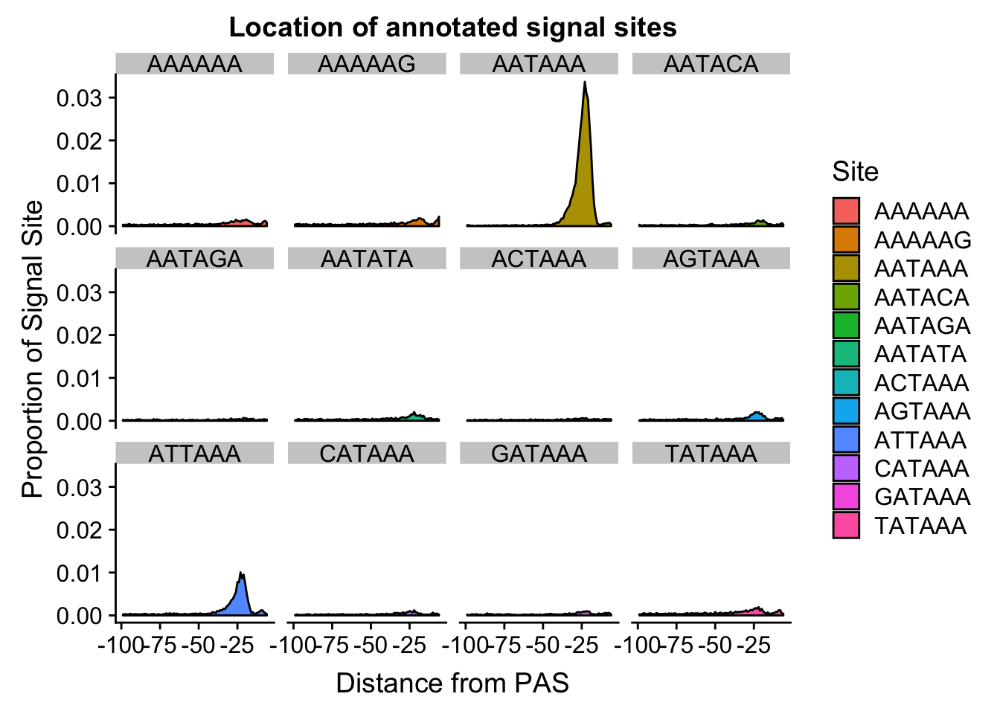
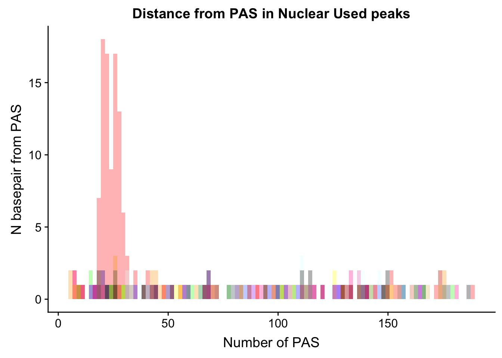
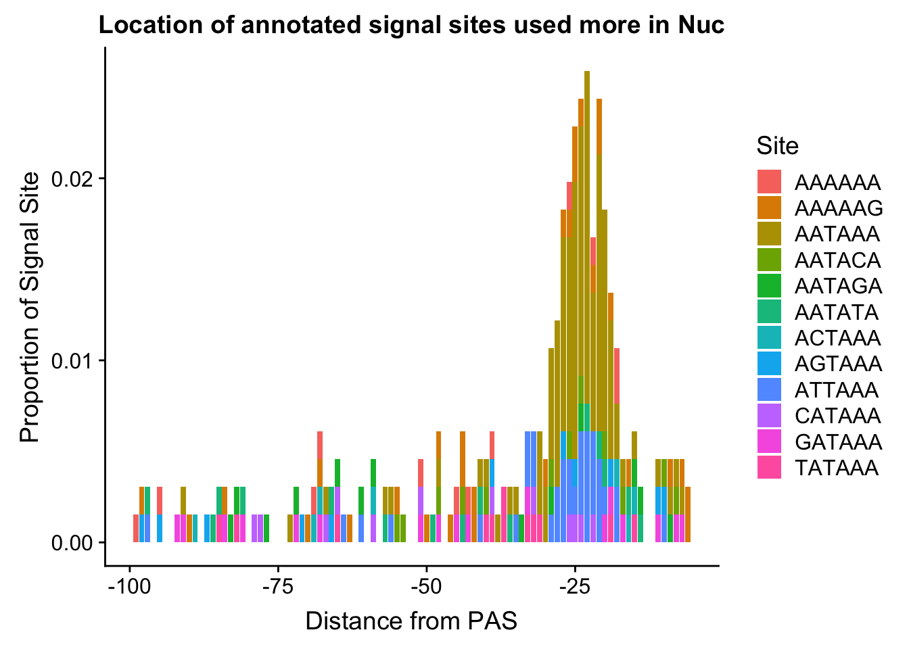

Last updated: 2019-03-09
Checks: 6 0
Knit directory: threeprimeseq/analysis/
This reproducible R Markdown analysis was created with workflowr (version 1.2.0). The Report tab describes the reproducibility checks that were applied when the results were created. The Past versions tab lists the development history.
Great! Since the R Markdown file has been committed to the Git repository, you know the exact version of the code that produced these results.
Great job! The global environment was empty. Objects defined in the global environment can affect the analysis in your R Markdown file in unknown ways. For reproduciblity it’s best to always run the code in an empty environment.
The command set.seed(12345) was run prior to running the code in the R Markdown file. Setting a seed ensures that any results that rely on randomness, e.g. subsampling or permutations, are reproducible.
Great job! Recording the operating system, R version, and package versions is critical for reproducibility.
Nice! There were no cached chunks for this analysis, so you can be confident that you successfully produced the results during this run.
Great! You are using Git for version control. Tracking code development and connecting the code version to the results is critical for reproducibility. The version displayed above was the version of the Git repository at the time these results were generated.
Note that you need to be careful to ensure that all relevant files for the analysis have been committed to Git prior to generating the results (you can use wflow_publish or wflow_git_commit). workflowr only checks the R Markdown file, but you know if there are other scripts or data files that it depends on. Below is the status of the Git repository when the results were generated:
Ignored files:
Ignored: .DS_Store
Ignored: .Rhistory
Ignored: .Rproj.user/
Ignored: data/.DS_Store
Ignored: data/perm_QTL_trans_noMP_5percov/
Ignored: output/.DS_Store
Untracked files:
Untracked: KalistoAbundance18486.txt
Untracked: analysis/4suDataIGV.Rmd
Untracked: analysis/DirectionapaQTL.Rmd
Untracked: analysis/EmpDistforOverlaps.Rmd
Untracked: analysis/EvaleQTLs.Rmd
Untracked: analysis/OverlapFullGWASCatelog.Rmd
Untracked: analysis/YL_QTL_test.Rmd
Untracked: analysis/groSeqAnalysis.Rmd
Untracked: analysis/ncbiRefSeq_sm.sort.mRNA.bed
Untracked: analysis/snake.config.notes.Rmd
Untracked: analysis/verifyBAM.Rmd
Untracked: analysis/verifybam_dubs.Rmd
Untracked: code/PeaksToCoverPerReads.py
Untracked: code/strober_pc_pve_heatmap_func.R
Untracked: data/18486.genecov.txt
Untracked: data/APApeaksYL.total.inbrain.bed
Untracked: data/AllPeak_counts/
Untracked: data/ApaQTLs/
Untracked: data/ApaQTLs_otherPhen/
Untracked: data/ChromHmmOverlap/
Untracked: data/DistTXN2Peak_genelocAnno/
Untracked: data/FeatureoverlapPeaks/
Untracked: data/GM12878.chromHMM.bed
Untracked: data/GM12878.chromHMM.txt
Untracked: data/LianoglouLCL/
Untracked: data/LocusZoom/
Untracked: data/LocusZoom_Unexp/
Untracked: data/LocusZoom_proc/
Untracked: data/MatchedSnps/
Untracked: data/NuclearApaQTLs.txt
Untracked: data/PeakCounts/
Untracked: data/PeakCounts_noMP_5perc/
Untracked: data/PeakCounts_noMP_genelocanno/
Untracked: data/PeakUsage/
Untracked: data/PeakUsage_noMP/
Untracked: data/PeakUsage_noMP_GeneLocAnno/
Untracked: data/PeaksUsed/
Untracked: data/PeaksUsed_noMP_5percCov/
Untracked: data/PolyA_DB/
Untracked: data/QTL_overlap/
Untracked: data/RNAkalisto/
Untracked: data/RefSeq_annotations/
Untracked: data/Replicates_usage/
Untracked: data/Signal_Loc/
Untracked: data/TotalApaQTLs.txt
Untracked: data/Totalpeaks_filtered_clean.bed
Untracked: data/UnderstandPeaksQC/
Untracked: data/WASP_STAT/
Untracked: data/YL-SP-18486-T-combined-genecov.txt
Untracked: data/YL-SP-18486-T_S9_R1_001-genecov.txt
Untracked: data/YL_QTL_test/
Untracked: data/apaExamp/
Untracked: data/apaExamp_proc/
Untracked: data/apaQTL_examp_noMP/
Untracked: data/bedgraph_peaks/
Untracked: data/bin200.5.T.nuccov.bed
Untracked: data/bin200.Anuccov.bed
Untracked: data/bin200.nuccov.bed
Untracked: data/clean_peaks/
Untracked: data/comb_map_stats.csv
Untracked: data/comb_map_stats.xlsx
Untracked: data/comb_map_stats_39ind.csv
Untracked: data/combined_reads_mapped_three_prime_seq.csv
Untracked: data/diff_iso_GeneLocAnno/
Untracked: data/diff_iso_proc/
Untracked: data/diff_iso_trans/
Untracked: data/eQTLs_Lietal/
Untracked: data/ensemble_to_genename.txt
Untracked: data/example_gene_peakQuant/
Untracked: data/explainProtVar/
Untracked: data/filtPeakOppstrand_cov_noMP_GeneLocAnno_5perc/
Untracked: data/filtered_APApeaks_merged_allchrom_refseqTrans.closest2End.bed
Untracked: data/filtered_APApeaks_merged_allchrom_refseqTrans.closest2End.noties.bed
Untracked: data/first50lines_closest.txt
Untracked: data/gencov.test.csv
Untracked: data/gencov.test.txt
Untracked: data/gencov_zero.test.csv
Untracked: data/gencov_zero.test.txt
Untracked: data/gene_cov/
Untracked: data/joined
Untracked: data/leafcutter/
Untracked: data/merged_combined_YL-SP-threeprimeseq.bg
Untracked: data/molPheno_noMP/
Untracked: data/mol_overlap/
Untracked: data/mol_pheno/
Untracked: data/nom_QTL/
Untracked: data/nom_QTL_opp/
Untracked: data/nom_QTL_trans/
Untracked: data/nuc6up/
Untracked: data/nuc_10up/
Untracked: data/other_qtls/
Untracked: data/pQTL_otherphen/
Untracked: data/pacbio_cov/
Untracked: data/peakPerRefSeqGene/
Untracked: data/peaks4DT/
Untracked: data/perm_QTL/
Untracked: data/perm_QTL_GeneLocAnno_noMP_5percov/
Untracked: data/perm_QTL_GeneLocAnno_noMP_5percov_3UTR/
Untracked: data/perm_QTL_diffWindow/
Untracked: data/perm_QTL_opp/
Untracked: data/perm_QTL_trans/
Untracked: data/perm_QTL_trans_filt/
Untracked: data/protAndAPAAndExplmRes.Rda
Untracked: data/protAndAPAlmRes.Rda
Untracked: data/protAndExpressionlmRes.Rda
Untracked: data/reads_mapped_three_prime_seq.csv
Untracked: data/smash.cov.results.bed
Untracked: data/smash.cov.results.csv
Untracked: data/smash.cov.results.txt
Untracked: data/smash_testregion/
Untracked: data/ssFC200.cov.bed
Untracked: data/temp.file1
Untracked: data/temp.file2
Untracked: data/temp.gencov.test.txt
Untracked: data/temp.gencov_zero.test.txt
Untracked: data/threePrimeSeqMetaData.csv
Untracked: data/threePrimeSeqMetaData55Ind.txt
Untracked: data/threePrimeSeqMetaData55Ind.xlsx
Untracked: data/threePrimeSeqMetaData55Ind_noDup.txt
Untracked: data/threePrimeSeqMetaData55Ind_noDup.xlsx
Untracked: data/threePrimeSeqMetaData55Ind_noDup_WASPMAP.txt
Untracked: data/threePrimeSeqMetaData55Ind_noDup_WASPMAP.xlsx
Untracked: output/LZ/
Untracked: output/deeptools_plots/
Untracked: output/picard/
Untracked: output/plots/
Untracked: output/qual.fig2.pdf
Unstaged changes:
Modified: analysis/28ind.peak.explore.Rmd
Modified: analysis/CompareLianoglouData.Rmd
Modified: analysis/NewPeakPostMP.Rmd
Modified: analysis/apaQTLoverlapGWAS.Rmd
Modified: analysis/characterize_apaQTLs.Rmd
Modified: analysis/cleanupdtseq.internalpriming.Rmd
Modified: analysis/coloc_apaQTLs_protQTLs.Rmd
Modified: analysis/dif.iso.usage.leafcutter.Rmd
Modified: analysis/diff_iso_pipeline.Rmd
Modified: analysis/explainpQTLs.Rmd
Modified: analysis/explore.filters.Rmd
Modified: analysis/fixBWChromNames.Rmd
Modified: analysis/flash2mash.Rmd
Modified: analysis/mispriming_approach.Rmd
Modified: analysis/overlapMolQTL.Rmd
Modified: analysis/overlapMolQTL.opposite.Rmd
Modified: analysis/overlap_qtls.Rmd
Modified: analysis/peakOverlap_oppstrand.Rmd
Modified: analysis/peakQCPPlots.Rmd
Modified: analysis/pheno.leaf.comb.Rmd
Modified: analysis/pipeline_55Ind.Rmd
Modified: analysis/swarmPlots_QTLs.Rmd
Modified: analysis/test.max2.Rmd
Modified: analysis/test.smash.Rmd
Modified: analysis/understandPeaks.Rmd
Modified: analysis/unexplainedeQTL_analysis.Rmd
Modified: code/Snakefile
Note that any generated files, e.g. HTML, png, CSS, etc., are not included in this status report because it is ok for generated content to have uncommitted changes.
These are the previous versions of the R Markdown and HTML files. If you’ve configured a remote Git repository (see ?wflow_git_remote), click on the hyperlinks in the table below to view them.
| File | Version | Author | Date | Message |
|---|---|---|---|---|
| Rmd | 2d022d6 | Briana Mittleman | 2019-03-09 | add location proportion plots |
| html | ca1a9f4 | Briana Mittleman | 2019-03-08 | Build site. |
| Rmd | 64fe413 | Briana Mittleman | 2019-03-08 | add signal site loc hist |
| html | ffb0e84 | Briana Mittleman | 2019-03-07 | Build site. |
| Rmd | 52e7514 | Briana Mittleman | 2019-03-07 | start new analysis - 3’ side of peak |
| html | 638d12e | Briana Mittleman | 2019-03-07 | Build site. |
| Rmd | 72c34ce | Briana Mittleman | 2019-03-07 | signal site loc based on front side |
| html | 4bf5d09 | Briana Mittleman | 2019-03-06 | Build site. |
| Rmd | 8717550 | Briana Mittleman | 2019-03-06 | res for AATAAA |
| html | 4023fe0 | Briana Mittleman | 2019-03-06 | Build site. |
| Rmd | d561190 | Briana Mittleman | 2019-03-06 | analysis up to getting seqs |
| html | ba63ea2 | Briana Mittleman | 2019-03-06 | Build site. |
| Rmd | c200503 | Briana Mittleman | 2019-03-06 | add signal site loc analysis |
In the Signal Site enrichment analysis I looked at the peaks to see if signal sites are enriched upstream of my peaks. I found this is true but now I want to see where the signal sites are in comparison to my peaks. I am going to use the biostrings package tool matchPWM for this analysis.
library(workflowr)This is workflowr version 1.2.0
Run ?workflowr for help getting startedlibrary(tidyverse)── Attaching packages ───────────────────────────────────────────────────────────────────────────────────── tidyverse 1.2.1 ──✔ ggplot2 3.1.0 ✔ purrr 0.3.1
✔ tibble 2.0.1 ✔ dplyr 0.8.0.1
✔ tidyr 0.8.3 ✔ stringr 1.4.0
✔ readr 1.3.1 ✔ forcats 0.4.0 Warning: package 'tibble' was built under R version 3.5.2Warning: package 'tidyr' was built under R version 3.5.2Warning: package 'purrr' was built under R version 3.5.2Warning: package 'dplyr' was built under R version 3.5.2Warning: package 'stringr' was built under R version 3.5.2Warning: package 'forcats' was built under R version 3.5.2── Conflicts ──────────────────────────────────────────────────────────────────────────────────────── tidyverse_conflicts() ──
✖ dplyr::filter() masks stats::filter()
✖ dplyr::lag() masks stats::lag()library(Biostrings)Warning: package 'Biostrings' was built under R version 3.5.2Loading required package: BiocGenericsLoading required package: parallel
Attaching package: 'BiocGenerics'The following objects are masked from 'package:parallel':
clusterApply, clusterApplyLB, clusterCall, clusterEvalQ,
clusterExport, clusterMap, parApply, parCapply, parLapply,
parLapplyLB, parRapply, parSapply, parSapplyLBThe following objects are masked from 'package:dplyr':
combine, intersect, setdiff, unionThe following objects are masked from 'package:stats':
IQR, mad, sd, var, xtabsThe following objects are masked from 'package:base':
anyDuplicated, append, as.data.frame, basename, cbind,
colMeans, colnames, colSums, dirname, do.call, duplicated,
eval, evalq, Filter, Find, get, grep, grepl, intersect,
is.unsorted, lapply, lengths, Map, mapply, match, mget, order,
paste, pmax, pmax.int, pmin, pmin.int, Position, rank, rbind,
Reduce, rowMeans, rownames, rowSums, sapply, setdiff, sort,
table, tapply, union, unique, unsplit, which, which.max,
which.minLoading required package: S4VectorsLoading required package: stats4
Attaching package: 'S4Vectors'The following objects are masked from 'package:dplyr':
first, renameThe following object is masked from 'package:tidyr':
expandThe following object is masked from 'package:base':
expand.gridLoading required package: IRanges
Attaching package: 'IRanges'The following objects are masked from 'package:dplyr':
collapse, desc, sliceThe following object is masked from 'package:purrr':
reduceLoading required package: XVector
Attaching package: 'XVector'The following object is masked from 'package:purrr':
compact
Attaching package: 'Biostrings'The following object is masked from 'package:base':
strsplitlibrary(BSgenome)Loading required package: GenomeInfoDbWarning: package 'GenomeInfoDb' was built under R version 3.5.2Loading required package: GenomicRangesLoading required package: rtracklayerWarning: package 'rtracklayer' was built under R version 3.5.2library(genomation)Loading required package: gridI need to get the coordinates for the regions I care about. I want to look at the peak and 150bp upstream. This is probably larger than I will need to look at but it will be good to have an inclusive look first.
I want to use the peak file and make a file that is the peak and upstream 150:
Upstream150Bases.py
#python
def main(Fin, Fout):
outBed=open(Fout, "w")
chrom_lengths=open("/project2/gilad/briana/genome_anotation_data/chrom_lengths2.sort.bed","r")
#make a dictionary with chrom lengths
length_dic={}
for i in chrom_lengths:
chrom, start, end = i.split()
length_dic[str(chrom)]=int(end)
#write file
for ln in open(Fin):
chrom, start, end, name, score, strand = ln.split()
chrom=str(chrom)
if strand=="+":
start_new=int(start)-150
if start_new <= 1:
start_new = 0
end_new= int(end)
if end_new == 0:
end_new=1
outBed.write("%s\t%d\t%d\t%s\t%s\t%s\n"%(chrom, start_new, end_new, name, score, strand))
if strand == "-":
start_new=int(start)
end_new=int(end) + 150
outBed.write("%s\t%d\t%d\t%s\t%s\t%s\n"%(chrom, start_new, end_new, name, score, strand))
outBed.close()
if __name__ == "__main__":
import sys
inFile = sys.argv[1]
outFile=sys.argv[2]
main(inFile, outFile)run_get150up.sh
#!/bin/bash
#SBATCH --job-name=run_get150up
#SBATCH --account=pi-yangili1
#SBATCH --time=36:00:00
#SBATCH --output=run_get150upt.out
#SBATCH --error=run_get150up.err
#SBATCH --partition=broadwl
#SBATCH --mem=16G
#SBATCH --mail-type=END
module load Anaconda3
source activate three-prime-env
python Upstream150Bases.py /project2/gilad/briana/threeprimeseq/data/peaks4DT/APAPeaks_5percCov_fixedStrand.bed /project2/gilad/briana/threeprimeseq/data/Signal_Loc/APAPeaks_5percCov_fixedStrand_peakand150up.bed Input the regions:
Fix chromosomes:
PeakRegions=read.table("../data/Signal_Loc/APAPeaks_5percCov_fixedStrand_peakand150up.bed", header=F,col.names = c("chr","start", "end", "peak", "score", "strand")) %>% mutate(Chrom=paste("chr", chr, sep="")) %>% select(Chrom, start,end,peak,score,strand)
write.table(PeakRegions, file="../data/Signal_Loc/APAPeaks_5percCov_fixedStrand_peakand150up_fixedChr.bed", quote=F, col.names = F, row.names = F, sep="\t")#convert to reads
reads.GR= readGeneric(file="../data/Signal_Loc/APAPeaks_5percCov_fixedStrand_peakand150up_fixedChr.bed",chr =1, start = 2, end =3, meta.cols =4, header=F, zero.based=TRUE,strand=6)I need to overlap these positions with the genome
AATAAA= PWM("AATAAA", type = c("log2probratio", "prob"), prior.params = c(A=0.25, C=0.25, G=0.25, T=0.25))
ATTAAA= PWM("ATTAAA", type = c("log2probratio", "prob"), prior.params = c(A=0.25, C=0.25, G=0.25, T=0.25))
AGTAAA= PWM("AGTAAA", type = c("log2probratio", "prob"), prior.params = c(A=0.25, C=0.25, G=0.25, T=0.25))
TATAAA= PWM("TATAAA", type = c("log2probratio", "prob"), prior.params = c(A=0.25, C=0.25, G=0.25, T=0.25))
CATAAA= PWM("CATAAA", type = c("log2probratio", "prob"), prior.params = c(A=0.25, C=0.25, G=0.25, T=0.25))
GATAAA= PWM("GATAAA", type = c("log2probratio", "prob"), prior.params = c(A=0.25, C=0.25, G=0.25, T=0.25))
AATATA= PWM("AATATA", type = c("log2probratio", "prob"), prior.params = c(A=0.25, C=0.25, G=0.25, T=0.25))
AATACA= PWM("AATACA", type = c("log2probratio", "prob"), prior.params = c(A=0.25, C=0.25, G=0.25, T=0.25))
AATAGA= PWM("AATAGA", type = c("log2probratio", "prob"), prior.params = c(A=0.25, C=0.25, G=0.25, T=0.25))
AAAAAG= PWM("AAAAAG", type = c("log2probratio", "prob"), prior.params = c(A=0.25, C=0.25, G=0.25, T=0.25))
ACTAAA= PWM("ACTAAA", type = c("log2probratio", "prob"), prior.params = c(A=0.25, C=0.25, G=0.25, T=0.25))genome.hg19 <- getBSgenome("BSgenome.Hsapiens.UCSC.hg19")
#matches <- matchPWM(pwm=AATAAA, subject = genome.hg19) %>% keepStandardChromosomes(., species= "Homo sapiens")
DNAstringSetPeaks=data.frame(seq=getSeq(genome.hg19, reads.GR))
x=DNAString(DNAstringSetPeaks[1,1])
hits <- matchPWM(AATAAA,x,with.score=T)
start(hits)[1] 215 219 255Look over and make hits file for all
list_AATAAA_res=c()
for (i in 1:nrow(DNAstringSetPeaks)){
x=DNAString(DNAstringSetPeaks[i,1])
list_AATAAA_res=c(list_AATAAA_res,matchPWM(AATAAA,x,with.score=T))
}Get out the start positions:
starts_AATAAA=c()
nsig=c()
last_oc_AATAAA=c()
for (i in list_AATAAA_res){
nsig=c(nsig, length(start(i)))
starts_AATAAA=c(starts_AATAAA, start(i))
#print(length(start(i)))
if (length(start(i)) != 0 ){
last_oc_AATAAA=c(last_oc_AATAAA, max(start(i),na.rm =T))
}
}Histogram of results:
summary(starts_AATAAA) Min. 1st Qu. Median Mean 3rd Qu. Max.
1.0 79.0 175.0 156.7 216.0 1612.0 hist(starts_AATAAA,breaks=10000)
summary(nsig) Min. 1st Qu. Median Mean 3rd Qu. Max.
0.000 1.000 3.000 3.857 5.000 74.000 sum(nsig==0)[1] 3584sum(nsig==1)[1] 8358hist(nsig,breaks=100)
Look at the first occurence:
summary(last_oc_AATAAA) Min. 1st Qu. Median Mean 3rd Qu. Max.
1.0 209.0 215.0 213.1 231.0 1612.0 hist(last_oc_AATAAA,breaks=1000)
I want to get the closest occurance of the
I want to start at the end of the peak (most downstream) and look for the signal sites. For confidence a peak is one PAS, I will look only at peaks less than 100bp long. I will extend the peak upstream 100 basepairs. I will look from the downstream end for the sites.
filterPeaks100length.py
peaks=open("/project2/gilad/briana/threeprimeseq/data/peaks4DT/APAPeaks_5percCov_fixedStrand.bed", "r")
outPeaks=open("/project2/gilad/briana/threeprimeseq/data/Signal_Loc/APAPeaks_5percCov_fixedStrand_filter4length.bed", "w")
nNotOk=0
for ln in peaks:
start= int(ln.split()[1])
end=int(ln.split()[2])
length=end - start
if length <= 100:
outPeaks.write(ln)
else:
nNotOk +=1
print(nNotOk)
outPeaks.close()
This filters 12105 peaks.
Upstream100Bases_filteredpeaks.py
#python
def main(Fin, Fout):
outBed=open(Fout, "w")
chrom_lengths=open("/project2/gilad/briana/genome_anotation_data/chrom_lengths2.sort.bed","r")
#make a dictionary with chrom lengths
length_dic={}
for i in chrom_lengths:
chrom, start, end = i.split()
length_dic[str(chrom)]=int(end)
#write file
for ln in open(Fin):
chrom, start, end, name, score, strand = ln.split()
chrom=str(chrom)
if strand=="+":
start_new=int(start)-100
if start_new <= 1:
start_new = 0
end_new= int(end)
if end_new == 0:
end_new=1
outBed.write("%s\t%d\t%d\t%s\t%s\t%s\n"%(chrom, start_new, end_new, name, score, strand))
if strand == "-":
start_new=int(start)
end_new=int(end) + 100
outBed.write("%s\t%d\t%d\t%s\t%s\t%s\n"%(chrom, start_new, end_new, name, score, strand))
outBed.close()
if __name__ == "__main__":
import sys
inFile = sys.argv[1]
outFile=sys.argv[2]
main(inFile, outFile)Run this:
python Upstream100Bases_filteredpeaks.py /project2/gilad/briana/threeprimeseq/data/Signal_Loc/APAPeaks_5percCov_fixedStrand_filter4length.bed /project2/gilad/briana/threeprimeseq/data/Signal_Loc/APAPeaks_5percCov_fixedStrand_filter4length_upstream100.bed Run bedtools nuc for this to get the sequences:
nucpeaksand100up.sh
#!/bin/bash
#SBATCH --job-name=nucpeaksand100up
#SBATCH --account=pi-yangili1
#SBATCH --time=8:00:00
#SBATCH --output=nucpeaksand100up.out
#SBATCH --error=nucpeaksand100up.err
#SBATCH --partition=broadwl
#SBATCH --mem=36G
#SBATCH --mail-type=END
module load Anaconda3
source activate three-prime-env
bedtools nuc -seq -fi /project2/gilad/briana/genome_anotation_data/genome/Homo_sapiens.GRCh37.75.dna_sm.all.fa -bed /project2/gilad/briana/threeprimeseq/data/Signal_Loc/APAPeaks_5percCov_fixedStrand_filter4length_upstream100.bed > /project2/gilad/briana/threeprimeseq/data/Signal_Loc/APAPeaks_5percCov_fixedStrand_filter4length_upstream100_Seq.bed This is looking at the positive strand left to right always. I need to go from the right and look at the reverse signal sites. I can look into ways to flip a string in python
‘a string’[::-1]
change region I am looking at before I do this - move to new analysis and try a new method for this analysis
DistPAS2Sig.py
def main(Insite, out):
sigsite=[Insite]
inBed=open("/project2/gilad/briana/threeprimeseq/data/Signal_Loc/APAPeaks_5percCov_fixedStrand_filter4length_upstream100_Seq.bed", "r")
outRes=open(out, "w")
#function for reverse compliments
def ReverseComplement1(seq):
seq_dict = {'A':'T','T':'A','G':'C','C':'G', 'a':'t', 't':'a', 'g':'c', 'c':'g'}
bases=[seq_dict[base] for base in seq]
bases=reversed(bases)
return("".join(bases))
#reverse comp each signal site
sigsite_revComp=[]
for i in sigsite:
sigsite_revComp.append(ReverseComplement1(i))
#want a dictionary for each of the sites and its reverse compliment:
sigsites_dic={}
for i in range(len(sigsite)):
sigsites_dic[sigsite[i]]=sigsite_revComp[i]
#function to get occurance: takes in sig site and sequence (give it the correct stranded stuff)
#make 2 of these, this is for the pos strand
def getOccurance(sigsite, seq):
if sigsite in seq:
length=len(seq)
pos= seq.rfind(sigsite)
posF=length-pos
return(posF)
else:
return(-9)
#negative strand occurance function:
def getOccurance_neg(sigsite, seq):
sigsite=sigsites_dic[sigsite]
if sigsite in seq:
pos= seq.find(sigsite)
return(pos + 6)
else:
return(-9)
#i can only addpend the value if the function does not return -9
#function i can run on each signal site
#loop through peaks and check for every site, first ask stand and do the rev
def loop41site(site):
resList=[]
for ln in inBed:
strand=ln.split()[5]
seq= ln.split()[15]
if strand == "+":
loc= getOccurance(site, seq)
if loc !=-9:
resList.append(loc)
else:
loc=getOccurance_neg(site,seq)
if loc !=-9:
resList.append(loc)
return(resList)
#run this for each sig site
res_dic={}
for i in sigsite:
res_dic[i]=[]
for i in sigsite:
reslist=loop41site(i)
res_dic[i]=reslist
outRes.write("%s\n"%(sigsite[0]))
for i in reslist:
outRes.write("%d\n"%(i))
outRes.close()
if __name__ == "__main__":
import sys
Site_in = sys.argv[1]
outFile= "/project2/gilad/briana/threeprimeseq/data/Signal_Loc/Loc_%s_Distance2end.txt"%(Site_in)
main(Site_in, outFile)
make a test with just 1 site:
test_DistPAS2Sig.py
sigsite=['ATTAAA']
inBed=open("/project2/gilad/briana/threeprimeseq/data/Signal_Loc/APAPeaks_5percCov_fixedStrand_filter4length_upstream100_Seq.bed", "r")
outRes=open('/project2/gilad/briana/threeprimeseq/data/Signal_Loc/test.text', "w")
#function for reverse compliments
def ReverseComplement1(seq):
seq_dict = {'A':'T','T':'A','G':'C','C':'G', 'a':'t', 't':'a', 'g':'c', 'c':'g'}
bases=[seq_dict[base] for base in seq]
bases=reversed(bases)
return("".join(bases))
#reverse comp each signal site
sigsite_revComp=[]
for i in sigsite:
sigsite_revComp.append(ReverseComplement1(i))
#want a dictionary for each of the sites and its reverse compliment:
sigsites_dic={}
for i in range(len(sigsite)):
sigsites_dic[sigsite[i]]=sigsite_revComp[i]
#function to get occurance: takes in sig site and sequence (give it the correct stranded stuff)
#make 2 of these, this is for the pos strand
def getOccurance(sigsite, seq):
if sigsite in seq:
print(sigsite)
print(seq)
pos= seq.rfind(sigsite)
return(pos)
else:
return(-9)
#negative strand occurance function:
def getOccurance_neg(sigsite, seq):
sigsite=sigsites_dic[sigsite]
if sigsite in seq:
pos= seq.find(sigsite)
return(pos + 6)
else:
return(-9)
#i can only addpend the value if the function does not return -9
#function i can run on each signal site
#loop through peaks and check for every site, first ask stand and do the rev
def loop41site(site):
resList=[]
for ln in inBed:
strand=ln.split()[5]
seq= ln.split()[15]
if strand == "+":
loc= getOccurance(site, seq)
print(loc)
if loc !=-9:
resList.append(str(loc))
else:
loc=getOccurance_neg(site,seq)
if loc !=-9:
resList.append(str(loc))
return(resList)
#run this for each sig site
res_dic={}
for i in sigsite:
res_dic[i]=[]
for i in sigsite:
reslist=loop41site(i)
res_dic[i]=reslist
for key, value in res_dic.items():
valString=":".join(value)
outRes.write("%s\t%s\n"%(key, valString))
outRes.close()
run_DistPAS2Sig.sh
#!/bin/bash
#SBATCH --job-name=run_DistPAS2Sig
#SBATCH --account=pi-yangili1
#SBATCH --time=36:00:00
#SBATCH --output=run_DistPAS2Sig.out
#SBATCH --error=run_DistPAS2Sig.err
#SBATCH --partition=broadwl
#SBATCH --mem=16G
#SBATCH --mail-type=END
module load Anaconda3
source activate three-prime-env
python DistPAS2Sig.py AATAAA
python DistPAS2Sig.py ATTAAA
python DistPAS2Sig.py AGTAAA
python DistPAS2Sig.py TATAAA
python DistPAS2Sig.py CATAAA
python DistPAS2Sig.py GATAAA
python DistPAS2Sig.py AATATA
python DistPAS2Sig.py AATACA
python DistPAS2Sig.py AATAGA
python DistPAS2Sig.py AAAAAG
python DistPAS2Sig.py ACTAAALoc_AATAAA= read.table("../data/Signal_Loc/Loc_AATAAA_Distance2end.txt", header=T) %>% mutate(Site="AATAAA")
nrow(Loc_AATAAA)[1] 11809Loc_AAAAAG= read.table("../data/Signal_Loc/Loc_AAAAAG_Distance2end.txt", header=T) %>% mutate(Site="AAAAAG")
Loc_AATACA= read.table("../data/Signal_Loc/Loc_AATACA_Distance2end.txt", header=T) %>% mutate(Site="AATACA")
Loc_AATAGA= read.table("../data/Signal_Loc/Loc_AATAGA_Distance2end.txt", header=T) %>% mutate(Site="AATAGA")
Loc_AATATA= read.table("../data/Signal_Loc/Loc_AATATA_Distance2end.txt", header=T) %>% mutate(Site="AATATA")
Loc_ACTAAA= read.table("../data/Signal_Loc/Loc_ACTAAA_Distance2end.txt", header=T) %>% mutate(Site="ACTAAA")
Loc_AGTAAA= read.table("../data/Signal_Loc/Loc_AGTAAA_Distance2end.txt", header=T) %>% mutate(Site="AGTAAA")
Loc_ATTAAA= read.table("../data/Signal_Loc/Loc_ATTAAA_Distance2end.txt", header=T) %>% mutate(Site="ATTAAA")
Loc_CATAAA= read.table("../data/Signal_Loc/Loc_CATAAA_Distance2end.txt", header=T) %>% mutate(Site="CATAAA")
Loc_GATAAA= read.table("../data/Signal_Loc/Loc_GATAAA_Distance2end.txt", header=T) %>% mutate(Site="GATAAA")
Loc_TATAAA= read.table("../data/Signal_Loc/Loc_TATAAA_Distance2end.txt", header=T) %>% mutate(Site="TATAAA")dist_Loc= ggplot(Loc_AATAAA, aes(x=AATAAA)) +
geom_histogram(bins=100, fill="red", alpha=.3) +
labs(title="Distance from PAS", x="Number of PAS", y="N basepair from PAS") +
geom_histogram(bins=100,data=Loc_AAAAAG, aes(x=AAAAAG), fill="orange", alpha=.3) +
geom_histogram(bins=100,data=Loc_AATACA, aes(x=AATACA), fill="yellow", alpha=.3) +
geom_histogram(bins=100,data=Loc_AATAGA, aes(x=AATAGA), fill="green", alpha=.3) +
geom_histogram(bins=100,data=Loc_AATATA, aes(x=AATATA), fill="blue", alpha=.3) +
geom_histogram(bins=100,data=Loc_ACTAAA, aes(x=ACTAAA), fill="purple", alpha=.3) +
geom_histogram(bins=100,data=Loc_AGTAAA, aes(x=AGTAAA), fill="firebrick3", alpha=.3) +
geom_histogram(bins=100,data=Loc_AGTAAA, aes(x=AGTAAA), fill="darksalmon", alpha=.3) +
geom_histogram(bins=100,data=Loc_CATAAA, aes(x=CATAAA), fill="darkslategray", alpha=.3) +
geom_histogram(bins=100,data=Loc_GATAAA, aes(x=GATAAA), fill="deeppink1", alpha=.3) +
geom_histogram(bins=100,data=Loc_TATAAA, aes(x=TATAAA), fill="lightcyan1", alpha=.3)
dist_Loc
| Version | Author | Date |
|---|---|---|
| ca1a9f4 | Briana Mittleman | 2019-03-08 |
Make a long dataframe for all of this to make it easier to manipulate.
colnames(Loc_AATAAA)=c("Count", "Site")
colnames(Loc_AAAAAG)=c("Count", "Site")
colnames(Loc_AATACA)=c("Count", "Site")
colnames(Loc_AATAGA)=c("Count", "Site")
colnames(Loc_AATATA)=c("Count", "Site")
colnames(Loc_ACTAAA)=c("Count", "Site")
colnames(Loc_AGTAAA)=c("Count", "Site")
colnames(Loc_CATAAA)=c("Count", "Site")
colnames(Loc_ATTAAA)=c("Count", "Site")
colnames(Loc_GATAAA)=c("Count", "Site")
colnames(Loc_TATAAA)=c("Count", "Site")
AllsiteDF=as.data.frame(rbind(Loc_AATAAA,Loc_AAAAAG,Loc_AATACA,Loc_AATAGA,Loc_AATATA,Loc_ACTAAA,Loc_AGTAAA,Loc_ATTAAA, Loc_GATAAA,Loc_TATAAA,Loc_CATAAA)) %>% mutate(NegCount=-1*as.integer(as.character(Count)), Cononical=ifelse(Site=="AATAAA", "Yes","No"))
AllsiteDF_to100= AllsiteDF %>% filter(Count < 100)plot:
ggplot(AllsiteDF_to100, aes(group=Site, x=NegCount, fill=Site)) + geom_histogram(position="stack",bins=50 ) + labs(x="Distance from PAS", y="N annotated Sites", title="Location of annotated signal sites") 
Do this as proportion:
AllsiteDF_to100_prop=AllsiteDF_to100 %>% group_by(Site,NegCount) %>% summarise(CountperPos=n()) %>% mutate(TotCount=sum(CountperPos),prop=CountperPos/TotCount)
#%>% ungroup() %>% group_by(Site) %>% mutate(nType=sum(Count), prop=CountperPos/nType)annoationPAS_allpeak=ggplot(AllsiteDF_to100_prop, aes(fill=Site, y=prop, x=NegCount)) + geom_density(stat="identity") + facet_wrap(~Site) + labs(x="Distance from PAS", y="Proportion of Signal Site", title="Location of annotated signal sites")
annoationPAS_allpeak
ggsave(annoationPAS_allpeak, file="../output/plots/annoationPAS_allpeakPropLocFacet.png")Saving 7 x 5 in imageannoationPAS_allpeakProphist=ggplot(AllsiteDF_to100_prop, aes(fill=Site, by=Site, y=prop, x=NegCount)) + geom_histogram(stat="identity", position="stack") + labs(x="Distance from PAS", y="Proportion of Signal Site", title="Location of annotated signal sites")Warning: Ignoring unknown parameters: binwidth, bins, padannoationPAS_allpeakProphistggsave(annoationPAS_allpeakProphist, file="../output/plots/annoationPAS_allpeakPropLocStackHist.png")Saving 7 x 5 in imageUsed more in NUclear * /project2/gilad/briana/threeprimeseq/data/peaks4DT/APAPeaks_5percCov_fixedStrand_SigUsageNuc.bed
Used more in nucelar, in intron * /project2/gilad/briana/threeprimeseq/data/peaks4DT/APAPeaks_5percCov_fixedStrand_SigUsageNuc_Intron.bed
Filter out ones that are too long:
filterPeaks100length_nuc.py
peaks=open(" /project2/gilad/briana/threeprimeseq/data/peaks4DT/APAPeaks_5percCov_fixedStrand_SigUsageNuc.bed", "r")
outPeaks=open("/project2/gilad/briana/threeprimeseq/data/Signal_Loc/APAPeaks_5percCov_fixedStrand_SigUsageNuc_filter4length.bed", "w")
nNotOk=0
for ln in peaks:
start= int(ln.split()[1])
end=int(ln.split()[2])
length=end - start
if length <= 100:
outPeaks.write(ln)
else:
nNotOk +=1
print(nNotOk)
outPeaks.close()
filterPeaks100length_nucintron.py
peaks=open("/project2/gilad/briana/threeprimeseq/data/peaks4DT/APAPeaks_5percCov_fixedStrand_SigUsageNuc_Intron.bed", "r")
outPeaks=open("/project2/gilad/briana/threeprimeseq/data/Signal_Loc/APAPeaks_5percCov_fixedStrand_SigUsageNuc_Intron_filter4length.bed", "w")
nNotOk=0
for ln in peaks:
start= int(ln.split()[1])
end=int(ln.split()[2])
length=end - start
if length <= 100:
outPeaks.write(ln)
else:
nNotOk +=1
print(nNotOk)
outPeaks.close()
python Upstream100Bases_filteredpeaks.py /project2/gilad/briana/threeprimeseq/data/Signal_Loc/APAPeaks_5percCov_fixedStrand_SigUsageNuc_Intron_filter4length.bed /project2/gilad/briana/threeprimeseq/data/Signal_Loc/APAPeaks_5percCov_fixedStrand_SigUsageNuc_Intron_filter4length_upstream100.bed
python Upstream100Bases_filteredpeaks.py /project2/gilad/briana/threeprimeseq/data/Signal_Loc/APAPeaks_5percCov_fixedStrand_SigUsageNuc_filter4length.bed /project2/gilad/briana/threeprimeseq/data/Signal_Loc/APAPeaks_5percCov_fixedStrand_SigUsageNuc_filter4length_upstream100.bed
nucpeaksand100up_nuc.sh
#!/bin/bash
#SBATCH --job-name=nucpeaksand100up
#SBATCH --account=pi-yangili1
#SBATCH --time=8:00:00
#SBATCH --output=nucpeaksand100up.out
#SBATCH --error=nucpeaksand100up.err
#SBATCH --partition=broadwl
#SBATCH --mem=36G
#SBATCH --mail-type=END
module load Anaconda3
source activate three-prime-env
bedtools nuc -seq -fi /project2/gilad/briana/genome_anotation_data/genome/Homo_sapiens.GRCh37.75.dna_sm.all.fa -bed /project2/gilad/briana/threeprimeseq/data/Signal_Loc/APAPeaks_5percCov_fixedStrand_SigUsageNuc_Intron_filter4length_upstream100.bed > /project2/gilad/briana/threeprimeseq/data/Signal_Loc/APAPeaks_5percCov_fixedStrand_SigUsageNuc_Intron_filter4length_upstream100_seq.bed
bedtools nuc -seq -fi /project2/gilad/briana/genome_anotation_data/genome/Homo_sapiens.GRCh37.75.dna_sm.all.fa -bed /project2/gilad/briana/threeprimeseq/data/Signal_Loc/APAPeaks_5percCov_fixedStrand_SigUsageNuc_filter4length_upstream100.bed > /project2/gilad/briana/threeprimeseq/data/Signal_Loc/APAPeaks_5percCov_fixedStrand_SigUsageNuc_filter4length_upstream100_seq.bed
DistPAS2Sig_nuclear.py
def main(Insite, out):
sigsite=[Insite]
inBed=open("/project2/gilad/briana/threeprimeseq/data/Signal_Loc/APAPeaks_5percCov_fixedStrand_SigUsageNuc_filter4length_upstream100_seq.bed", "r")
outRes=open(out, "w")
#function for reverse compliments
def ReverseComplement1(seq):
seq_dict = {'A':'T','T':'A','G':'C','C':'G', 'a':'t', 't':'a', 'g':'c', 'c':'g'}
bases=[seq_dict[base] for base in seq]
bases=reversed(bases)
return("".join(bases))
#reverse comp each signal site
sigsite_revComp=[]
for i in sigsite:
sigsite_revComp.append(ReverseComplement1(i))
#want a dictionary for each of the sites and its reverse compliment:
sigsites_dic={}
for i in range(len(sigsite)):
sigsites_dic[sigsite[i]]=sigsite_revComp[i]
#function to get occurance: takes in sig site and sequence (give it the correct stranded stuff)
#make 2 of these, this is for the pos strand
def getOccurance(sigsite, seq):
if sigsite in seq:
length=len(seq)
pos= seq.rfind(sigsite)
posF=length-pos
return(posF)
else:
return(-9)
#negative strand occurance function:
def getOccurance_neg(sigsite, seq):
sigsite=sigsites_dic[sigsite]
if sigsite in seq:
pos= seq.find(sigsite)
return(pos + 6)
else:
return(-9)
#i can only addpend the value if the function does not return -9
#function i can run on each signal site
#loop through peaks and check for every site, first ask stand and do the rev
def loop41site(site):
resList=[]
for ln in inBed:
strand=ln.split()[5]
seq= ln.split()[15]
if strand == "+":
loc= getOccurance(site, seq)
if loc !=-9:
resList.append(loc)
else:
loc=getOccurance_neg(site,seq)
if loc !=-9:
resList.append(loc)
return(resList)
#run this for each sig site
res_dic={}
for i in sigsite:
res_dic[i]=[]
for i in sigsite:
reslist=loop41site(i)
res_dic[i]=reslist
outRes.write("%s\n"%(sigsite[0]))
for i in reslist:
outRes.write("%d\n"%(i))
outRes.close()
if __name__ == "__main__":
import sys
Site_in = sys.argv[1]
outFile= "/project2/gilad/briana/threeprimeseq/data/Signal_Loc/Loc_%s_Distance2end_nuclear.txt"%(Site_in)
main(Site_in, outFile)
DistPAS2Sig_nucIntron.py
def main(Insite, out):
sigsite=[Insite]
inBed=open("/project2/gilad/briana/threeprimeseq/data/Signal_Loc/APAPeaks_5percCov_fixedStrand_SigUsageNuc_Intron_filter4length_upstream100_seq.bed", "r")
outRes=open(out, "w")
#function for reverse compliments
def ReverseComplement1(seq):
seq_dict = {'A':'T','T':'A','G':'C','C':'G', 'a':'t', 't':'a', 'g':'c', 'c':'g'}
bases=[seq_dict[base] for base in seq]
bases=reversed(bases)
return("".join(bases))
#reverse comp each signal site
sigsite_revComp=[]
for i in sigsite:
sigsite_revComp.append(ReverseComplement1(i))
#want a dictionary for each of the sites and its reverse compliment:
sigsites_dic={}
for i in range(len(sigsite)):
sigsites_dic[sigsite[i]]=sigsite_revComp[i]
#function to get occurance: takes in sig site and sequence (give it the correct stranded stuff)
#make 2 of these, this is for the pos strand
def getOccurance(sigsite, seq):
if sigsite in seq:
length=len(seq)
pos= seq.rfind(sigsite)
posF=length-pos
return(posF)
else:
return(-9)
#negative strand occurance function:
def getOccurance_neg(sigsite, seq):
sigsite=sigsites_dic[sigsite]
if sigsite in seq:
pos= seq.find(sigsite)
return(pos + 6)
else:
return(-9)
#i can only addpend the value if the function does not return -9
#function i can run on each signal site
#loop through peaks and check for every site, first ask stand and do the rev
def loop41site(site):
resList=[]
for ln in inBed:
strand=ln.split()[5]
seq= ln.split()[15]
if strand == "+":
loc= getOccurance(site, seq)
if loc !=-9:
resList.append(loc)
else:
loc=getOccurance_neg(site,seq)
if loc !=-9:
resList.append(loc)
return(resList)
#run this for each sig site
res_dic={}
for i in sigsite:
res_dic[i]=[]
for i in sigsite:
reslist=loop41site(i)
res_dic[i]=reslist
outRes.write("%s\n"%(sigsite[0]))
for i in reslist:
outRes.write("%d\n"%(i))
outRes.close()
if __name__ == "__main__":
import sys
Site_in = sys.argv[1]
outFile= "/project2/gilad/briana/threeprimeseq/data/Signal_Loc/Loc_%s_Distance2end_nuclearIntron.txt"%(Site_in)
main(Site_in, outFile)
Run both of these:
run_DistPAS2Sig_nuc.sh
#!/bin/bash
#SBATCH --job-name=run_DistPAS2Sig_nuc
#SBATCH --account=pi-yangili1
#SBATCH --time=36:00:00
#SBATCH --output=un_DistPAS2Sig_nuc.out
#SBATCH --error=un_DistPAS2Sig_nuc.err
#SBATCH --partition=broadwl
#SBATCH --mem=16G
#SBATCH --mail-type=END
module load Anaconda3
source activate three-prime-env
python DistPAS2Sig_nucIntron.py AATAAA
python DistPAS2Sig_nucIntron.py ATTAAA
python DistPAS2Sig_nucIntron.py AGTAAA
python DistPAS2Sig_nucIntron.py TATAAA
python DistPAS2Sig_nucIntron.py CATAAA
python DistPAS2Sig_nucIntron.py GATAAA
python DistPAS2Sig_nucIntron.py AATATA
python DistPAS2Sig_nucIntron.py AATACA
python DistPAS2Sig_nucIntron.py AATAGA
python DistPAS2Sig_nucIntron.py AAAAAG
python DistPAS2Sig_nucIntron.py ACTAAA
python DistPAS2Sig_nuclear.py AATAAA
python DistPAS2Sig_nuclear.py ATTAAA
python DistPAS2Sig_nuclear.py AGTAAA
python DistPAS2Sig_nuclear.py TATAAA
python DistPAS2Sig_nuclear.py CATAAA
python DistPAS2Sig_nuclear.py GATAAA
python DistPAS2Sig_nuclear.py AATATA
python DistPAS2Sig_nuclear.py AATACA
python DistPAS2Sig_nuclear.py AATAGA
python DistPAS2Sig_nuclear.py AAAAAG
python DistPAS2Sig_nuclear.py ACTAAA
Loc_AATAAA_Nuc= read.table("../data/Signal_Loc/Loc_AATAAA_Distance2end_nuclear.txt", header=T) %>% mutate(Site="AATAAA")
Loc_AAAAAG_Nuc= read.table("../data/Signal_Loc/Loc_AAAAAG_Distance2end_nuclear.txt", header=T) %>% mutate(Site="AAAAAG")
Loc_AATACA_Nuc= read.table("../data/Signal_Loc/Loc_AATACA_Distance2end_nuclear.txt", header=T) %>% mutate(Site="AATACA")
Loc_AATAGA_Nuc= read.table("../data/Signal_Loc/Loc_AATAGA_Distance2end_nuclear.txt", header=T) %>% mutate(Site="AATAGA")
Loc_AATATA_Nuc =read.table("../data/Signal_Loc/Loc_AATATA_Distance2end_nuclear.txt", header=T) %>% mutate(Site="AATATA")
Loc_ACTAAA_Nuc= read.table("../data/Signal_Loc/Loc_ACTAAA_Distance2end_nuclear.txt", header=T) %>% mutate(Site="ACTAAA")
Loc_AGTAAA_Nuc= read.table("../data/Signal_Loc/Loc_AGTAAA_Distance2end_nuclear.txt", header=T) %>% mutate(Site="AGTAAA")
Loc_ATTAAA_Nuc=read.table("../data/Signal_Loc/Loc_ATTAAA_Distance2end_nuclear.txt", header=T) %>% mutate(Site="ATTAAA")
Loc_CATAAA_Nuc= read.table("../data/Signal_Loc/Loc_CATAAA_Distance2end_nuclear.txt", header=T) %>% mutate(Site="CATAAA")
Loc_GATAAA_Nuc= read.table("../data/Signal_Loc/Loc_GATAAA_Distance2end_nuclear.txt", header=T) %>% mutate(Site="GATAAA")
Loc_TATAAA_Nuc= read.table("../data/Signal_Loc/Loc_TATAAA_Distance2end_nuclear.txt", header=T) %>% mutate(Site="TATAAA")
dist_Loc_Nuc= ggplot(Loc_AATAAA_Nuc, aes(x=AATAAA)) +
geom_histogram(bins=100, fill="red", alpha=.3) +
labs(title="Distance from PAS in Nuclear Used peaks", x="Number of PAS", y="N basepair from PAS") +
geom_histogram(bins=100,data=Loc_AAAAAG_Nuc, aes(x=AAAAAG), fill="orange", alpha=.3) +
geom_histogram(bins=100,data=Loc_AATACA_Nuc, aes(x=AATACA), fill="yellow", alpha=.3) +
geom_histogram(bins=100,data=Loc_AATAGA_Nuc, aes(x=AATAGA), fill="green", alpha=.3) +
geom_histogram(bins=100,data=Loc_AATATA_Nuc, aes(x=AATATA), fill="blue", alpha=.3) +
geom_histogram(bins=100,data=Loc_ACTAAA_Nuc, aes(x=ACTAAA), fill="purple", alpha=.3) +
geom_histogram(bins=100,data=Loc_AGTAAA_Nuc, aes(x=AGTAAA), fill="firebrick3", alpha=.3) +
geom_histogram(bins=100,data=Loc_AGTAAA_Nuc, aes(x=AGTAAA), fill="darksalmon", alpha=.3) +
geom_histogram(bins=100,data=Loc_CATAAA_Nuc, aes(x=CATAAA), fill="darkslategray", alpha=.3) +
geom_histogram(bins=100,data=Loc_GATAAA_Nuc, aes(x=GATAAA), fill="deeppink1", alpha=.3) +
geom_histogram(bins=100,data=Loc_TATAAA_Nuc, aes(x=TATAAA), fill="lightcyan1", alpha=.3)
dist_Loc_Nuc
Make a long dataframe for all of this to make it easier to manipulate.
colnames(Loc_AATAAA_Nuc)=c("Count", "Site")
colnames(Loc_AAAAAG_Nuc)=c("Count", "Site")
colnames(Loc_AATACA_Nuc)=c("Count", "Site")
colnames(Loc_AATAGA_Nuc)=c("Count", "Site")
colnames(Loc_AATATA_Nuc)=c("Count", "Site")
colnames(Loc_ACTAAA_Nuc)=c("Count", "Site")
colnames(Loc_AGTAAA_Nuc)=c("Count", "Site")
colnames(Loc_CATAAA_Nuc)=c("Count", "Site")
colnames(Loc_ATTAAA_Nuc)=c("Count", "Site")
colnames(Loc_GATAAA_Nuc)=c("Count", "Site")
colnames(Loc_TATAAA_Nuc)=c("Count", "Site")
AllsiteDF_Nuc=as.data.frame(rbind(Loc_AATAAA_Nuc,Loc_AAAAAG_Nuc,Loc_AATACA_Nuc,Loc_AATAGA_Nuc,Loc_AATATA_Nuc,Loc_ACTAAA_Nuc,Loc_AGTAAA_Nuc,Loc_ATTAAA_Nuc, Loc_GATAAA_Nuc,Loc_TATAAA_Nuc,Loc_CATAAA_Nuc)) %>% mutate(NegCount=-1*as.integer(as.character(Count)), Cononical=ifelse(Site=="AATAAA", "Yes","No"))
AllsiteDF_to100_Nuc= AllsiteDF_Nuc %>% filter(Count < 100)plot:
ggplot(AllsiteDF_to100_Nuc, aes(group=Site, x=NegCount, fill=Site)) + geom_histogram(position="stack",bins=50 ) + labs(x="Distance from PAS", y="N annotated Sites", title="Location of annotated signal sites- Used more in Nuclear")
| Version | Author | Date |
|---|---|---|
| ca1a9f4 | Briana Mittleman | 2019-03-08 |
Do this as proportion:
AllsiteDF_to100_prop_Nuc=AllsiteDF_to100_Nuc %>% group_by(Site,NegCount) %>% summarise(CountperPos=n()) %>% mutate(TotCount=sum(CountperPos),prop=CountperPos/TotCount)
#%>% ungroup() %>% group_by(Site) %>% mutate(nType=sum(Count), prop=CountperPos/nType)annoationPAS_Nucpeak=ggplot(AllsiteDF_to100_prop_Nuc, aes(fill=Site, y=prop, x=NegCount)) + geom_histogram(stat="identity") + facet_wrap(~Site) + labs(x="Distance from PAS", y="Proportion of Signal Site", title="Location of annotated signal sites for PAS used more in Nuclear")Warning: Ignoring unknown parameters: binwidth, bins, padannoationPAS_Nucpeakggsave(annoationPAS_Nucpeak, file="../output/plots/annoationPAS_NuclearpeaksPropLocFacet.png")Saving 7 x 5 in imageannoationPAS_NucpeakProphist=ggplot(AllsiteDF_to100_prop_Nuc, aes(fill=Site, by=Site, y=prop, x=NegCount)) + geom_histogram(stat="identity", position="stack") + labs(x="Distance from PAS", y="Proportion of Signal Site", title="Location of annotated signal sites used more in Nuc")Warning: Ignoring unknown parameters: binwidth, bins, padannoationPAS_NucpeakProphist
ggsave(annoationPAS_NucpeakProphist, file="../output/plots/annoationPAS_NucpeakPropLocStackHist.png")Saving 7 x 5 in imageLoc_AATAAA_Int= read.table("../data/Signal_Loc/Loc_AATAAA_Distance2end_nuclearIntron.txt", header=T)
Loc_AAAAAG_Int= read.table("../data/Signal_Loc/Loc_AAAAAG_Distance2end_nuclearIntron.txt", header=T)
Loc_AATACA_Int= read.table("../data/Signal_Loc/Loc_AATACA_Distance2end_nuclearIntron.txt", header=T)
Loc_AATAGA_Int= read.table("../data/Signal_Loc/Loc_AATAGA_Distance2end_nuclearIntron.txt", header=T)
Loc_AATATA_Int =read.table("../data/Signal_Loc/Loc_AATATA_Distance2end_nuclearIntron.txt", header=T)
Loc_ACTAAA_Int= read.table("../data/Signal_Loc/Loc_ACTAAA_Distance2end_nuclearIntron.txt", header=T)
Loc_AGTAAA_Int= read.table("../data/Signal_Loc/Loc_AGTAAA_Distance2end_nuclearIntron.txt", header=T)
Loc_ATTAAA_Int=read.table("../data/Signal_Loc/Loc_ATTAAA_Distance2end_nuclearIntron.txt", header=T)
Loc_CATAAA_Int= read.table("../data/Signal_Loc/Loc_CATAAA_Distance2end_nuclearIntron.txt", header=T)
Loc_GATAAA_Int= read.table("../data/Signal_Loc/Loc_GATAAA_Distance2end_nuclearIntron.txt", header=T)
Loc_TATAAA_Int= read.table("../data/Signal_Loc/Loc_TATAAA_Distance2end_nuclearIntron.txt", header=T)
dist_Loc_Int= ggplot(Loc_AATAAA_Int, aes(x=AATAAA)) +
geom_histogram(bins=100, fill="red", alpha=.3) +
labs(title="Distance from PAS in Intronic Nuclear Used peaks", x="Number of PAS", y="N basepair from PAS") +
geom_histogram(bins=100,data=Loc_AAAAAG_Int, aes(x=AAAAAG), fill="orange", alpha=.3) +
geom_histogram(bins=100,data=Loc_AATACA_Int, aes(x=AATACA), fill="yellow", alpha=.3) +
geom_histogram(bins=100,data=Loc_AATAGA_Int, aes(x=AATAGA), fill="green", alpha=.3) +
geom_histogram(bins=100,data=Loc_AATATA_Int, aes(x=AATATA), fill="blue", alpha=.3) +
geom_histogram(bins=100,data=Loc_ACTAAA_Int, aes(x=ACTAAA), fill="purple", alpha=.3) +
geom_histogram(bins=100,data=Loc_AGTAAA_Int, aes(x=AGTAAA), fill="firebrick3", alpha=.3) +
geom_histogram(bins=100,data=Loc_AGTAAA_Int, aes(x=AGTAAA), fill="darksalmon", alpha=.3) +
geom_histogram(bins=100,data=Loc_CATAAA_Int, aes(x=CATAAA), fill="darkslategray", alpha=.3) +
geom_histogram(bins=100,data=Loc_GATAAA_Int, aes(x=GATAAA), fill="deeppink1", alpha=.3) +
geom_histogram(bins=100,data=Loc_TATAAA_Int, aes(x=TATAAA), fill="lightcyan1", alpha=.3)
dist_Loc_Int*/project2/gilad/briana/threeprimeseq/data/peaks4DT/APAPeaks_5percCov_fixedStrand_INTRON.bed (17854)
filterPeaks100length_Intron.py
peaks=open("/project2/gilad/briana/threeprimeseq/data/peaks4DT/APAPeaks_5percCov_fixedStrand_INTRON.bed", "r")
outPeaks=open("/project2/gilad/briana/threeprimeseq/data/Signal_Loc/APAPeaks_5percCov_fixedStrand_INTRON_filter4length.bed", "w")
nNotOk=0
for ln in peaks:
start= int(ln.split()[1])
end=int(ln.split()[2])
length=end - start
if length <= 100:
outPeaks.write(ln)
else:
nNotOk +=1
print(nNotOk)
outPeaks.close()
12250 peaks
python Upstream100Bases_filteredpeaks.py /project2/gilad/briana/threeprimeseq/data/Signal_Loc/APAPeaks_5percCov_fixedStrand_INTRON_filter4length.bed /project2/gilad/briana/threeprimeseq/data/Signal_Loc/APAPeaks_5percCov_fixedStrand_INTRON_filter4length_upstream100.bednucpeaksand100up_intron.sh
#!/bin/bash
#SBATCH --job-name=nucpeaksand100up_intron
#SBATCH --account=pi-yangili1
#SBATCH --time=8:00:00
#SBATCH --output=nucpeaksand100up_intron.out
#SBATCH --error=nucpeaksand100up_intron.err
#SBATCH --partition=broadwl
#SBATCH --mem=36G
#SBATCH --mail-type=END
module load Anaconda3
source activate three-prime-env
bedtools nuc -seq -fi /project2/gilad/briana/genome_anotation_data/genome/Homo_sapiens.GRCh37.75.dna_sm.all.fa -bed /project2/gilad/briana/threeprimeseq/data/Signal_Loc/APAPeaks_5percCov_fixedStrand_INTRON_filter4length_upstream100.bed > /project2/gilad/briana/threeprimeseq/data/Signal_Loc/APAPeaks_5percCov_fixedStrand_INTRON_filter4length_upstream100_seq.bed
DistPAS2Sig_Intron.py
def main(Insite, out):
sigsite=[Insite]
inBed=open("/project2/gilad/briana/threeprimeseq/data/Signal_Loc/APAPeaks_5percCov_fixedStrand_INTRON_filter4length_upstream100_seq.bed", "r")
outRes=open(out, "w")
#function for reverse compliments
def ReverseComplement1(seq):
seq_dict = {'A':'T','T':'A','G':'C','C':'G', 'a':'t', 't':'a', 'g':'c', 'c':'g'}
bases=[seq_dict[base] for base in seq]
bases=reversed(bases)
return("".join(bases))
#reverse comp each signal site
sigsite_revComp=[]
for i in sigsite:
sigsite_revComp.append(ReverseComplement1(i))
#want a dictionary for each of the sites and its reverse compliment:
sigsites_dic={}
for i in range(len(sigsite)):
sigsites_dic[sigsite[i]]=sigsite_revComp[i]
#function to get occurance: takes in sig site and sequence (give it the correct stranded stuff)
#make 2 of these, this is for the pos strand
def getOccurance(sigsite, seq):
if sigsite in seq:
length=len(seq)
pos= seq.rfind(sigsite)
posF=length-pos
return(posF)
else:
return(-9)
#negative strand occurance function:
def getOccurance_neg(sigsite, seq):
sigsite=sigsites_dic[sigsite]
if sigsite in seq:
pos= seq.find(sigsite)
return(pos + 6)
else:
return(-9)
#i can only addpend the value if the function does not return -9
#function i can run on each signal site
#loop through peaks and check for every site, first ask stand and do the rev
def loop41site(site):
resList=[]
for ln in inBed:
strand=ln.split()[5]
seq= ln.split()[15]
if strand == "+":
loc= getOccurance(site, seq)
if loc !=-9:
resList.append(loc)
else:
loc=getOccurance_neg(site,seq)
if loc !=-9:
resList.append(loc)
return(resList)
#run this for each sig site
res_dic={}
for i in sigsite:
res_dic[i]=[]
for i in sigsite:
reslist=loop41site(i)
res_dic[i]=reslist
outRes.write("%s\n"%(sigsite[0]))
for i in reslist:
outRes.write("%d\n"%(i))
outRes.close()
if __name__ == "__main__":
import sys
Site_in = sys.argv[1]
outFile= "/project2/gilad/briana/threeprimeseq/data/Signal_Loc/Loc_%s_Distance2end_Intronic.txt"%(Site_in)
main(Site_in, outFile)
run_DistPAS2Sig_Intron.sh
#!/bin/bash
#SBATCH --job-name=run_DistPAS2Sig_Intronc
#SBATCH --account=pi-yangili1
#SBATCH --time=36:00:00
#SBATCH --output=run_DistPAS2Sig_Intron.out
#SBATCH --error=run_DistPAS2Sig_Intron.err
#SBATCH --partition=broadwl
#SBATCH --mem=16G
#SBATCH --mail-type=END
module load Anaconda3
source activate three-prime-env
python DistPAS2Sig_Intron.py AATAAA
python DistPAS2Sig_Intron.py ATTAAA
python DistPAS2Sig_Intron.py AGTAAA
python DistPAS2Sig_Intron.py TATAAA
python DistPAS2Sig_Intron.py CATAAA
python DistPAS2Sig_Intron.py GATAAA
python DistPAS2Sig_Intron.py AATATA
python DistPAS2Sig_Intron.py AATACA
python DistPAS2Sig_Intron.py AATAGA
python DistPAS2Sig_Intron.py AAAAAG
python DistPAS2Sig_Intron.py ACTAAALoc_AATAAA_AllInt= read.table("../data/Signal_Loc/Loc_AATAAA_Distance2end_Intronic.txt", header=T)
Loc_AAAAAG_AllInt= read.table("../data/Signal_Loc/Loc_AAAAAG_Distance2end_Intronic.txt", header=T)
Loc_AATACA_AllInt= read.table("../data/Signal_Loc/Loc_AATACA_Distance2end_Intronic.txt", header=T)
Loc_AATAGA_AllInt= read.table("../data/Signal_Loc/Loc_AATAGA_Distance2end_Intronic.txt", header=T)
Loc_AATATA_AllInt =read.table("../data/Signal_Loc/Loc_AATATA_Distance2end_Intronic.txt", header=T)
Loc_ACTAAA_AllInt= read.table("../data/Signal_Loc/Loc_ACTAAA_Distance2end_Intronic.txt", header=T)
Loc_AGTAAA_AllInt= read.table("../data/Signal_Loc/Loc_AGTAAA_Distance2end_Intronic.txt", header=T)
Loc_ATTAAA_AllInt=read.table("../data/Signal_Loc/Loc_ATTAAA_Distance2end_Intronic.txt", header=T)
Loc_CATAAA_AllInt= read.table("../data/Signal_Loc/Loc_CATAAA_Distance2end_Intronic.txt", header=T)
Loc_GATAAA_AllInt= read.table("../data/Signal_Loc/Loc_GATAAA_Distance2end_Intronic.txt", header=T)
Loc_TATAAA_AllInt= read.table("../data/Signal_Loc/Loc_TATAAA_Distance2end_Intronic.txt", header=T)
dist_Loc_AllInt= ggplot(Loc_AATAAA_AllInt, aes(x=AATAAA)) +
geom_histogram(bins=100, fill="red", alpha=.3) +
labs(title="Distance from PAS in Intronic peaks", x="Number of PAS", y="N basepair from PAS") +
geom_histogram(bins=100,data=Loc_AAAAAG_AllInt, aes(x=AAAAAG), fill="orange", alpha=.3) +
geom_histogram(bins=100,data=Loc_AATACA_AllInt, aes(x=AATACA), fill="yellow", alpha=.3) +
geom_histogram(bins=100,data=Loc_AATAGA_AllInt, aes(x=AATAGA), fill="green", alpha=.3) +
geom_histogram(bins=100,data=Loc_AATATA_AllInt, aes(x=AATATA), fill="blue", alpha=.3) +
geom_histogram(bins=100,data=Loc_ACTAAA_AllInt, aes(x=ACTAAA), fill="purple", alpha=.3) +
geom_histogram(bins=100,data=Loc_AGTAAA_AllInt, aes(x=AGTAAA), fill="firebrick3", alpha=.3) +
geom_histogram(bins=100,data=Loc_AGTAAA_AllInt, aes(x=AGTAAA), fill="darksalmon", alpha=.3) +
geom_histogram(bins=100,data=Loc_CATAAA_AllInt, aes(x=CATAAA), fill="darkslategray", alpha=.3) +
geom_histogram(bins=100,data=Loc_GATAAA_AllInt, aes(x=GATAAA), fill="deeppink1", alpha=.3) +
geom_histogram(bins=100,data=Loc_TATAAA_AllInt, aes(x=TATAAA), fill="lightcyan1", alpha=.3)
dist_Loc_AllInt
sessionInfo()R version 3.5.1 (2018-07-02)
Platform: x86_64-apple-darwin15.6.0 (64-bit)
Running under: macOS 10.14.1
Matrix products: default
BLAS: /Library/Frameworks/R.framework/Versions/3.5/Resources/lib/libRblas.0.dylib
LAPACK: /Library/Frameworks/R.framework/Versions/3.5/Resources/lib/libRlapack.dylib
locale:
[1] en_US.UTF-8/en_US.UTF-8/en_US.UTF-8/C/en_US.UTF-8/en_US.UTF-8
attached base packages:
[1] grid stats4 parallel stats graphics grDevices utils
[8] datasets methods base
other attached packages:
[1] BSgenome.Hsapiens.UCSC.hg19_1.4.0 genomation_1.14.0
[3] BSgenome_1.50.0 rtracklayer_1.42.2
[5] GenomicRanges_1.34.0 GenomeInfoDb_1.18.2
[7] Biostrings_2.50.2 XVector_0.22.0
[9] IRanges_2.16.0 S4Vectors_0.20.1
[11] BiocGenerics_0.28.0 forcats_0.4.0
[13] stringr_1.4.0 dplyr_0.8.0.1
[15] purrr_0.3.1 readr_1.3.1
[17] tidyr_0.8.3 tibble_2.0.1
[19] ggplot2_3.1.0 tidyverse_1.2.1
[21] workflowr_1.2.0
loaded via a namespace (and not attached):
[1] nlme_3.1-137 bitops_1.0-6
[3] matrixStats_0.54.0 fs_1.2.6
[5] lubridate_1.7.4 httr_1.4.0
[7] rprojroot_1.3-2 tools_3.5.1
[9] backports_1.1.3 R6_2.4.0
[11] KernSmooth_2.23-15 lazyeval_0.2.1
[13] colorspace_1.4-0 seqPattern_1.14.0
[15] withr_2.1.2 tidyselect_0.2.5
[17] compiler_3.5.1 git2r_0.24.0
[19] cli_1.0.1 rvest_0.3.2
[21] Biobase_2.42.0 xml2_1.2.0
[23] DelayedArray_0.8.0 labeling_0.3
[25] scales_1.0.0 digest_0.6.18
[27] Rsamtools_1.34.1 rmarkdown_1.11
[29] pkgconfig_2.0.2 htmltools_0.3.6
[31] plotrix_3.7-4 rlang_0.3.1
[33] readxl_1.3.0 rstudioapi_0.9.0
[35] impute_1.56.0 generics_0.0.2
[37] jsonlite_1.6 BiocParallel_1.16.6
[39] RCurl_1.95-4.12 magrittr_1.5
[41] GenomeInfoDbData_1.2.0 Matrix_1.2-15
[43] Rcpp_1.0.0 munsell_0.5.0
[45] reticulate_1.11.1 stringi_1.3.1
[47] whisker_0.3-2 yaml_2.2.0
[49] SummarizedExperiment_1.12.0 zlibbioc_1.28.0
[51] plyr_1.8.4 crayon_1.3.4
[53] lattice_0.20-38 haven_2.1.0
[55] hms_0.4.2 knitr_1.21
[57] pillar_1.3.1 reshape2_1.4.3
[59] XML_3.98-1.19 glue_1.3.0
[61] evaluate_0.13 data.table_1.12.0
[63] modelr_0.1.4 cellranger_1.1.0
[65] gtable_0.2.0 assertthat_0.2.0
[67] xfun_0.5 gridBase_0.4-7
[69] broom_0.5.1 GenomicAlignments_1.18.1